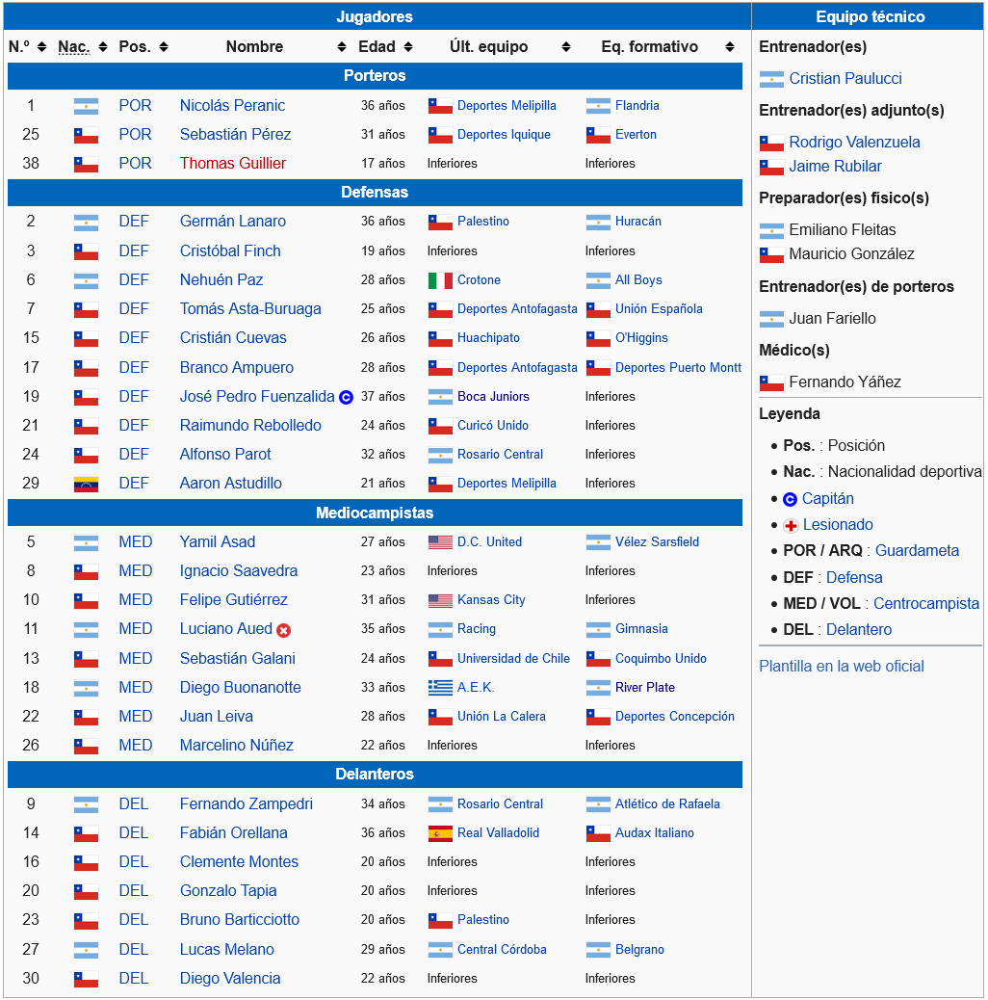

- Grupo A
- Grupo B
- Grupo C
- Grupo D

Club Deportivo Universidad Católica La rama de fútbol del Club Deportivo Universidad Católica es la más importante de la institución. Radicada en la ciudad de Santiago, fue fundada el 21 de abril de 1937 por un grupo de deportistas de la Pontificia Universidad Católica de Chile quienes decidieron escindirse del Club Universitario de Deportes. Se desempeña en la Primera División de Chile. Ha ganado 16 títulos de Primera División, 4 Copa Chile, 4 Supercopa de Chile, 1 Copa de la República, 2 torneos de Segunda División. A nivel internacional, conquistó la Copa Interamericana en 1994.1 Ha sido uno de los cuatro equipos chilenos que ha disputado una final de la Copa Libertadores de América, y el último en hacerlo en 1993.n 1 Los colores que identifican al club son el azul y el blanco. Su escudo es de forma triangular, de fondo blanco enmarcando a una cruz de color azul, que simboliza el uniforme de combate basado en los guerreros medievales durante las Cruzadas, con las letras CDUC (Club Deportivo Universidad Católica) en color rojo. El lema de Universidad Católica es «Por la Patria, Dios y la Universidad», frase que está presente además en el himno del club. Forma parte de los equipos clásicos de la FIFA.2 Su rival tradicional es Universidad de Chile, con el cual disputa el «Clásico universitario», el partido con mayor tradición del fútbol chileno. Ejerce de local en el Estadio San Carlos de Apoquindo, ubicado en el barrio homónimo de la comuna de Las Condes. Posee una capacidad para 14 780 espectadores,3 y fue inaugurado el 4 de septiembre de 1988.n 24 Cuenta con una rama de fútbol femenino, que desde el año 2009 milita en la Primera División. A nivel de Fútbol Joven masculino, ha obtenido campeonatos mundiales de su categoría, como el Torneo Internacional de Croix Sub-19 1980 y la Manchester United Premier Cup 2012
